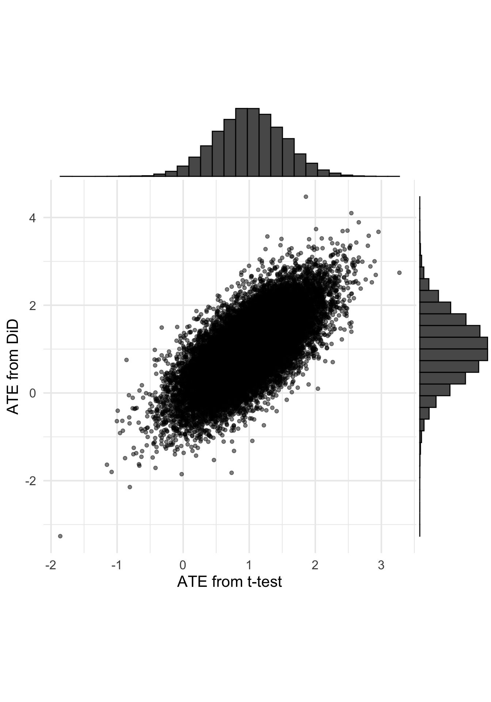

Difference in Difference Estimates are Biased When Randomizing And Testing For Pre-Treatment Differences
AB Testing
Statistics
Causal Inference
Author
Demetri Pananos
Published
September 3, 2023
A few times I’ve had people ask me if they should use difference in differences (DiD) to estimate the treatment effect in their randomized experiment. Here is one such example, but I’ve had it come up at Zapier as well.
The short answer is: if you’ve randomized people to treatment and control, then you don’t need to use DiD to estimate the treatment effect. If I were to randomize and not intervene, then the two groups have the same distribution of potential outcomes, hence the same mean (hence the null is true). No need to take into account pre-treatment differences.
Using DiD to analyze the experiment is fine, the estimate of the treatment effect is unbioased as well. But you should not choose your analysis method based on the data. That is to say, commit to DiD or a different method prior to seeing data, because choosing to do DiD because you detect a difference in pre-treatment outcomes will lead to bias.
This is easy to demonstrate with a simple simulation. Let’s assume that prior to treatment, data have a standard normal population distribution. Once I introduce the treatment, the treatment effect is \(\tau\). If \(A\) is an indicator for treatment, then the data are
Assume I randomize enough people to each group to have 80% power to detect effects at least as small as \(\tau\). Now, let’s do a couple things:
Let’s fit a linear model just analyzing \(y_{post}\) through a t-test.
Let’s fit a linear model analyzing \(y_{post}\) via DiD.
Let’s keep track of cases when pre-treatment differences are detected (even though none exist).
Let’s record the estimate of the treatment effect from both analyses and plot them against one another.
Here is some R code to do that. I’ll simulate the case where \(\tau=1\) and \(\sigma=1\).
Code
library(tidyverse)library(ggExtra)sim_data <-function(N, tau, sig){ i <-1:N trt <-rbinom(N, 1, 0.5) y_pre <-rnorm(N, 0, sig) y_post <-rnorm(N, tau*trt, sig)bind_rows(tibble(i, trt, N, y=y_pre, period =0),tibble(i, trt, N, y=y_post, period =1), )}do_analysis <-function(){ d <-sim_data(N=16, tau=1, sig=1)# did DiD_fit <-lm(y ~ trt*period, data=d)# regular fit <-lm(y~trt, data=filter(d, period==1)) fits <-list(DiD_fit, fit) which <-list('DiD','Difference in means')tibble(lm_treatment_effect =coef(fit)['trt'],did_treatment_effect =coef(DiD_fit)['trt:period'],pre_treat_statsig =if_else(summary(DiD_fit)$coefficients['trt:period','Pr(>|t|)']<0.05, 'Pre-treatment Difference Detected', 'No Pre-treatment Difference Detected') )}results <-map_dfr(1:5000, ~do_analysis(), .id ='sim')plot <- results %>%ggplot(aes(lm_treatment_effect, did_treatment_effect, color=pre_treat_statsig)) +geom_point(alpha =0.5) +theme(legend.position="bottom",aspect.ratio =1) +labs(x ='ATE from t-test', y ='ATE from DiD', color='' ) +scale_color_brewer(palette ='Set1')ggMarginal(plot, type="histogram")

Both techniques are produce unbiased estimates of the ATE as evidenced by the marginal histograms, but if you condition which analysis you do based on pre-treatment differences then you’re estimate of the ATE can end up being biased. And the bias is not small either! I suspect this has much to do with regression to the mean.